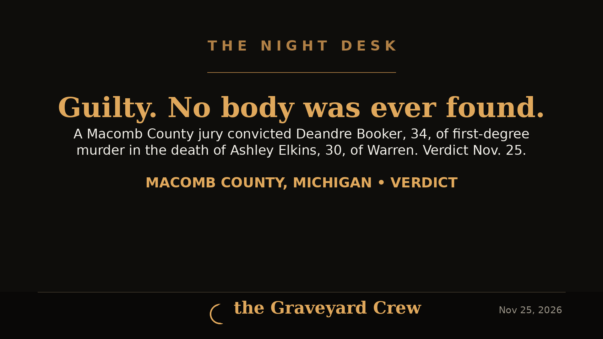

November 25, 2026 · 2 min read
Guilty: Deandre Booker convicted of murdering Ashley Elkins, whose body was never found

Headline card by The Night Desk
Guilty: Deandre Booker convicted of murdering Ashley Elkins
A Roseville man was found guilty of murder on Wednesday, Nov. 25, in the case of a missing Warren mother who is presumed dead after she hasn't been seen or heard from in nearly two years, the Detroit Free Press reported.
The verdict
After about three hours of deliberations, a Macomb County Circuit Court jury found Deandre Booker, 34, guilty of:
- First-degree premeditated murder
- Tampering with evidence
- Concealing the death of an individual
- Lying to a police officer during a violent crime investigation
Jurors found him not guilty of disinterment and mutilation of a body.
The trial began Nov. 10 with jury selection and wrapped up Tuesday, Nov. 24, with closing arguments. Booker waived his presence for trial and appeared by Zoom from the county jail on Nov. 24.
Booker is to be sentenced at 8:30 a.m. on Jan. 21, 2027.
A disappearance with no funeral
Ashley Elkins, 30, was last seen on Jan. 2, 2025, walking toward Booker's apartment in Roseville after telling family she was running errands. She was seen on surveillance video walking into the apartment, and no one ever saw her again.
There was a weeklong search for her in a Lenox Township landfill in January 2025 without success. Her car was found five days later, on Jan. 7, 2025, around 13 Mile Road and Little Mack Avenue in Roseville, about 4 miles from Booker's apartment complex.
She and Booker had dated, but had broken up.
In closing arguments, Assistant Prosecutor Sian Hengeveld told jurors there was no funeral for Elkins "because there was nothing to bury." Prosecutors pointed to blood matching Elkins' DNA found in Booker's bathroom, on a jacket he wore, and pooled on the floor of a Dumpster, along with video evidence and online searches.
Defense attorney Robbie Lang argued there was no proof beyond a reasonable doubt that Elkins is dead, and no evidence of her cause and manner of death. "We don't know what happened in that apartment," he told jurors.
The jury disagreed on murder and the related charges — and acquitted Booker on the mutilation count.
Outside court, a family member said, via Court TV coverage: "From the very beginning, we said we wanted justice. We got justice today."
Source: Detroit Free Press, Nov. 25, 2026. Verdict details cross-checked against Court TV coverage the same day.
Source: Detroit Free Press — read the original report
← Back to latest stories